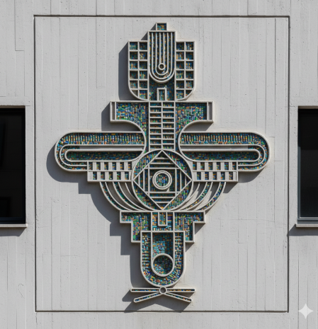

How Corten steel, patinated brass, and handcrafted textures converse with concrete, timber, and glass to breathe tactile warmth into minimalist corporate and residential interiors.
In contemporary architectural design, the interaction between art and space is no longer an afterthought—it is a foundational element. We are witnessing a shift from generic decor to highly integrated, site-specific art that speaks the same language as the building itself. Raw metals have emerged as a profound medium for this dialogue.
The Language of Materiality
There is an undeniable allure to metals left raw or lightly coaxed by patina. Unlike synthetic materials that remain static, metals age gracefully. Corten steel rusts to a protective, earthy ochre, while brass and copper deepen with oxidation, recording the passage of time and the touch of human hands.
"A successful installation doesn't just occupy space; it transforms it. It should feel as though the room was built around the art, not the other way around."
When placed against the stark, precise lines of modern concrete or expansive glass facades, the organic, imperfect textures of handcrafted metal create a tension that is deeply compelling. This contrast—the precise versus the organic, the cold versus the warm—brings an essential emotional warmth to minimalist environments.

Light and Kinetic Shadows
Metal is inherently responsive to its environment, particularly to light. A well-designed metal sculpture or wall relief acts as a canvas for the sun's trajectory. Throughout the day, changing angles of light alter the perceived color, depth, and texture of the metal.
Our studio often integrates concealed backlighting into large-scale metal installations. By night, these pieces transform. Light spills from behind the hammered or laser-cut forms, casting intricate, kinetic shadows that extend the artwork far beyond its physical boundaries. The metal itself retreats into silhouette, allowing the negative space to take center stage.
Considerations for Commissioning
When commissioning a large-scale metal artwork for an architectural setting, several critical factors must be addressed early in the design process:
- Structural Integration: Heavy metals require robust anchoring. Collaborating with structural engineers during the drywall or concrete pour phase ensures seamless installation without visible hardware.
- Scale and Proportion: The artwork must command the space without overwhelming it. It should respond to ceiling heights, sightlines, and the flow of human traffic.
- Patina and Preservation: Depending on the environment (indoor vs. outdoor, coastal vs. arid), different sealants and patination processes must be chosen to ensure the metal ages as intended.
Ultimately, the symbiosis of raw metal and modern architecture is about creating a sense of permanence and soul. It is a commitment to craftsmanship that honors both the history of the materials and the future of the space they inhabit.